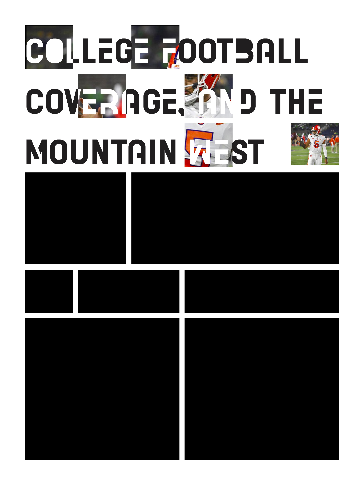
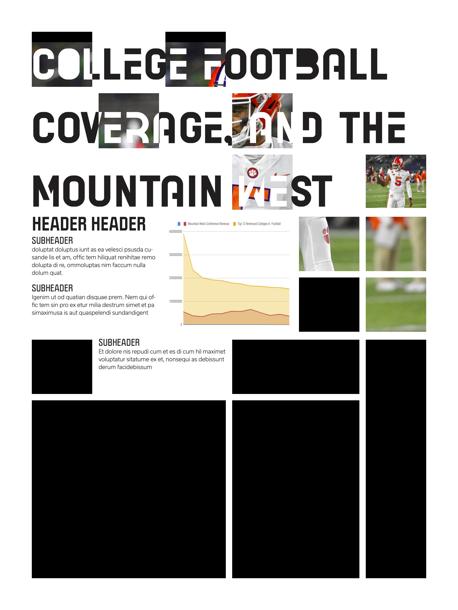
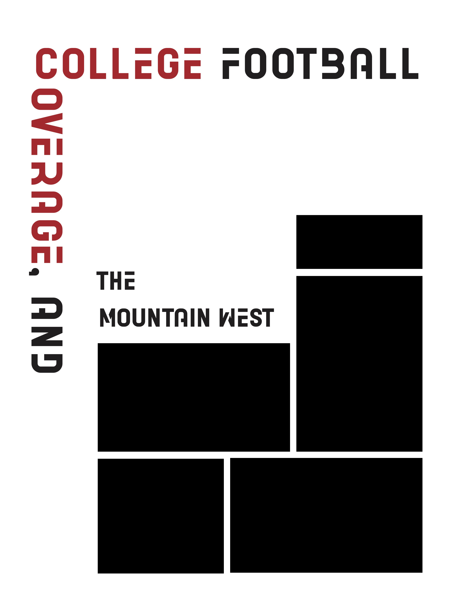
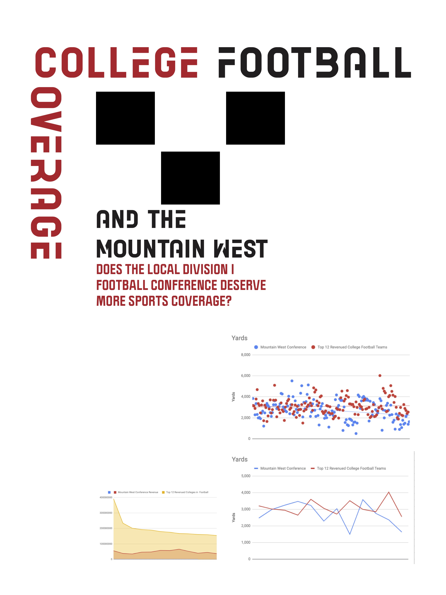
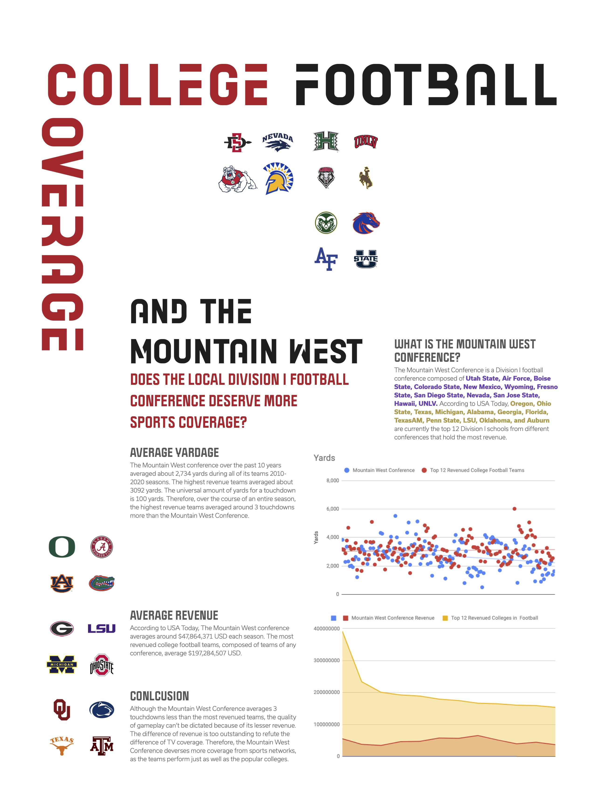
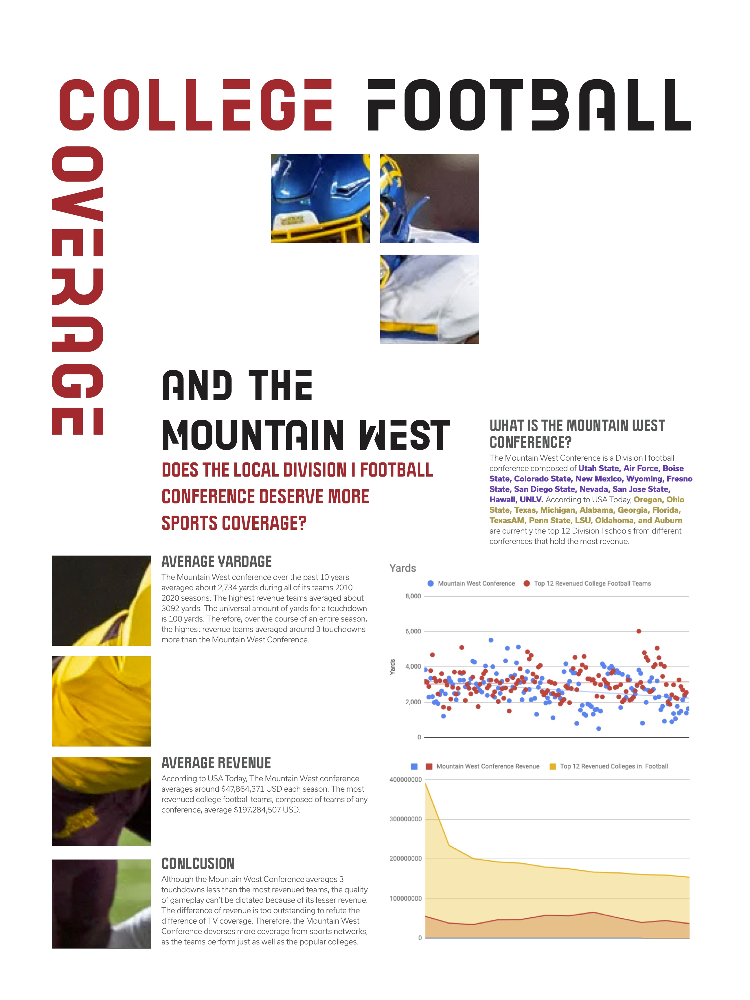
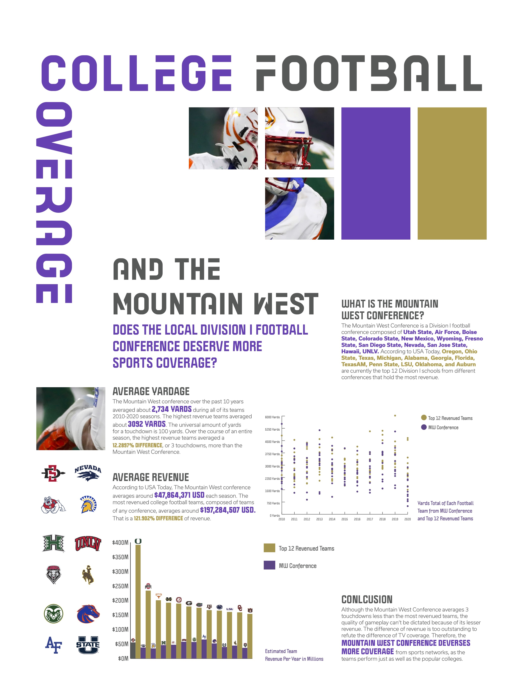
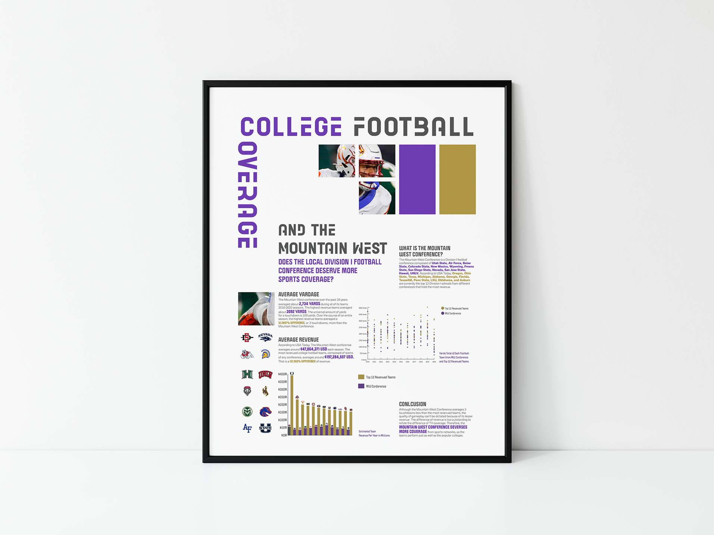

Project Overview
Football, one of the most watched and well-known sports throughout the entire United States. Not far behind this behemoth is the National Football League’s younger sibling, College Football. The NCAA Football league holds rising college stars and extremely loyal fans compiled of university students, alumni, and alike. However, some colleges don’t carry the same popularity as others. Different conferences divisions of the NCAA hold a substantial amount of TV coverage compared to others, specifically the Southeastern Conference and Big 25.
Because of this coverage, many college football fans tend to believe that those colleges are covered simply because they are the best. However, I believe this outcome to be false, as there are many colleges, specifically the California CSU and UCs, that are on par with the others. I wish to use the statistics used by Brayden Rogowski, which calculate the statistics of every Division I football team, to compare and contrast these Football Divisions.
Contributions
Ideation created by David Raxa
Iterations created by David Raxa
Presentation created by David Raxa
Research
The goal of this project is to compare and contrast the differences between California's local Division I conferences, the Mountain West Conference, and teh most broadcasted colleges in the United States. I plan to not only use Brayden Rogowski's team statistics, but to also find the amount of revenue these divions have compared with eachother.
Ideations
  Iterations
Although a contemporary layout could have been applicable, it was decided to create a layout which focused more on typographic modernist principles, and the golden ratio.
  Final Iteration
The final design used the Mountain West color schemes and type layout that guides the reader to its conclusion. Using the golden ratio, the composition was able to lead the reader on a non-linear path - while also convincing the reader about the subject of College Football
Conclusion
I chose to focus on the MWC and the top revenued Division I conferences because I believe that colleges like Fresno State, San Jose State, and San Diego State deserve more of a fanbase than what's present. For years, the top 25 popular colleges had the only media coverage. This proposition may discover that better sales doesn't mean better teams.
If our local Division I colleges like Fresno State have the same similar offensive statstics like Texas and Florida State, then they deserve the same coverage as eachother. College Football is an extremely popular sport for young adults, and an increase of popularity for smaller schools will bring more school spirit, revenue, and most importantly: coverage.
